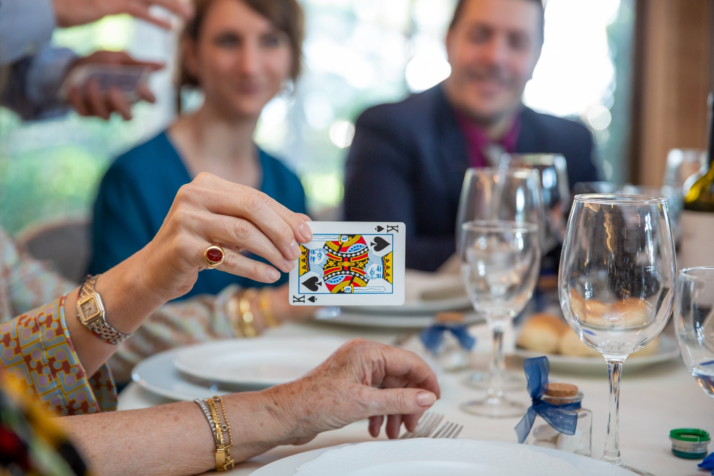

Micromagia Close Up · Intrattenimento per matrimoni
La meraviglia, a pochi centimetri.
Piccoli miracoli con carte, monete e oggetti quotidiani, vissuti da vicino e condivisi dagli ospiti.
Base a Roma · Disponibile in tutta Italia · Paolo Musetti

L'esperienza
Micromagia Close Up
Paolo si muove tra tavoli e invitati, portando la magia nelle conversazioni.
Carte, monete e oggetti quotidiani diventano protagonisti di sorprese personali.
Il formato segue il ritmo del ricevimento senza richiedere un palco.


Per il vostro matrimonio
Un momento speciale, coordinato con cura.
Invia data, location e numero di ospiti per valutare il formato adatto al matrimonio.
Verifica la data su WhatsApp